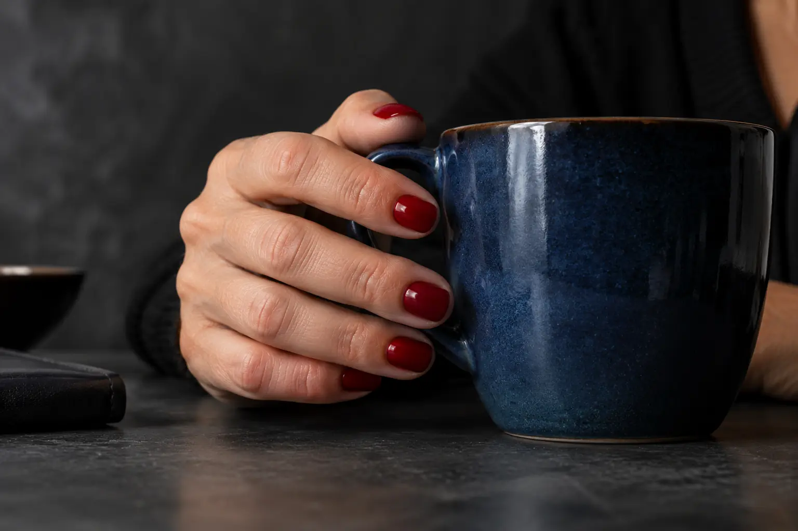

Gelinio lakavimo gidas: kas tai, kaip atliekamas ir kaip prižiūrėti
Autorius: Madbeauty redakcija · Numatyta 2026 m. lapkričio 3 d. 16:00 (Lietuvos laiku)
Supraskite, kuo gelinis lakavimas skiriasi nuo nagų stiprinimo ir priauginimo, kokius darbus verta patikrinti paslaugos apraše ir kodėl tiksli eiga priklauso nuo naudojamos sistemos.

Gelinis lakavimas – tai gelinio lako spalvos danga ant natūralaus nago; pats lakavimas nereiškia nago ilginimo. Renkantis paslaugą svarbu išsiaiškinti, ar į jos apimtį įeina esamos dangos nuėmimas ir norimas dizainas. Amerikos dermatologų akademija gelinį manikiūrą aprašo kaip UV šviesoje kietinamą. AAD informacija apie gelinį manikiūrą
Danga ir natūralus nagas
Paprastas paaiškinamasis modelis: natūralus nagas → ant jo esanti gelinė danga → matoma spalva ar apdaila. Tai nėra tikslus sluoksnių brėžinys: priemonės, sluoksnių skaičius ir jų eiliškumas priklauso nuo konkrečios gelinės sistemos. Gelinis lakavimas suteikia dangą, o ne papildomą nago ilgį.
Gelinis lakavimas, stiprinimas ir priauginimas
Šie pavadinimai nurodo skirtingus paslaugos tikslus: gelinis lakavimas – spalvos ar apdailos dangą, natūralaus nago stiprinimas – siekį sutvirtinti natūralų nagą, o priauginimas – papildomo ilgio kūrimą. Konkretus produktas ir darbo būdas priklauso nuo teikėjo naudojamos sistemos. Peržiūrėtuose paslaugų meniu šios užduotys ir jų variantai įvardijami atskirai, tačiau vieno teikėjo aprašas nėra visiems salonams taikomas standartas. Vili Nails paslaugų meniu ir „Room for nails“ paslaugų meniu
Kaip vyksta vizitas ir ką patikrinti?
Pirmiausia aptariamas norimas rezultatas ir esama danga. Tada pasirenkama konkreti paslauga, nagai paruošiami, užtepama naudojama gelinė sistema ir ji kietinama pagal tos sistemos instrukciją. Tai bendras kliento vizito vaizdas, o ne techninis procedūros protokolas: tiksli produktų seka, sluoksniai ir kietinimo sąlygos priklauso nuo konkrečios sistemos.
- Norimas rezultatas: ar ieškote tik spalvos dangos, ar nagų stiprinimo arba ilgio priauginimo?
- Esama danga: ar ją reikės nuimti ir ar nuėmimas įtrauktas į pasirinktą paslaugą?
- Apdaila: ar į aprašą įeina viena spalva, prancūziškas lakavimas ar kitas dizainas? Daugiau apie skirtingus pasirinkimus skaitykite nagų dizaino gide.
- Paslaugos apimtis: ar įtrauktas nagų formos keitimas ar odelių tvarkymas?
Kaip prižiūrėti gelinę dangą?
Jei danga atšoka ar pakyla, jos neplėškite ir nekrapštykite. AAD rekomenduoja gelinį laką nuimti, o ne lupti; dėl konkretaus nuėmimo būdo vadovaukitės naudojamos sistemos ir paslaugos teikėjo instrukcija. AAD rekomendacijos dėl gelinio manikiūro
Jei paslaugos aprašas neaiškus, prieš vizitą pasitikslinkite, kokia užduotis bus atliekama, ar bus nuimama esama danga ir koks dizainas įtrauktas. Kaina, trukmė ir tiksli darbo eiga skiriasi pagal konkretų pasiūlymą; šis gidas nepatvirtina Madbeauty teikėjų pasiūlos.
Palyginkite procedūrų aprašus kataloge: Gelinis lakavimas. Konkrečią darbų apimtį, kainą ir prieinamumą tikrinkite prie realaus teikėjo pasiūlymo.
Susiję gidai
Šaltiniai
- Vili Nails · realių paslaugų variantai · www.treatwell.lt
- Room for nails · paslaugų apimtis · www.treatwell.lt
- AAD · gelinis manikiūras · www.aad.org